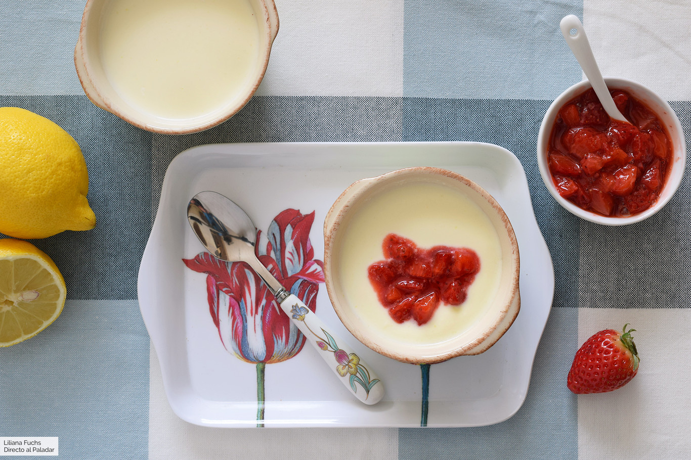

|  | ||
| Nata liquida para montar | 200 g | |
| Yogur griego o más nata | 200 g | |
| Azúcar o más al gusto | 85 g | |
| Ralladura de limón(dos cucharaditas) | 1 | |
| Zumo de limón | 60 ml | |
| Fresa | 250 g | |
| Azúcar morena | 10 | |
Disponer la la nata y el yogur en un cazo, añadir el azúcar y la ralladura de limón lavado, solo la parte amarilla. Mezclar y calentar a potencia media, hasta que vaya a romper a hervir; bajar la temperatura y cocer removiendo unos 5 minutos. Retirar del fuego y agregar el zumo de limón. Remover con las varillas y dejar enfriar unos 20 minutos. Preparar mientras tanto las fresas, lavándolas y cortándolas en trocitos sin el rabito. Mezclar con el azúcar y reservar. Pasar la crema por un colador de malla fina, apretando bien con una lengüeta, para eliminar la ralladura y posibles grumos. Corregir el punto de dulzor si hiciera falta. Repartir esta mezcla en cuatro o seis recipientes y llevar a la nevera. Dejar enfriar, al menos, dos horas, mejor toda la noche.